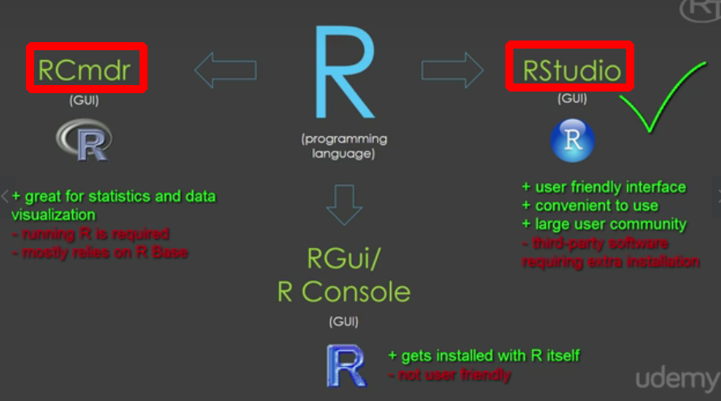
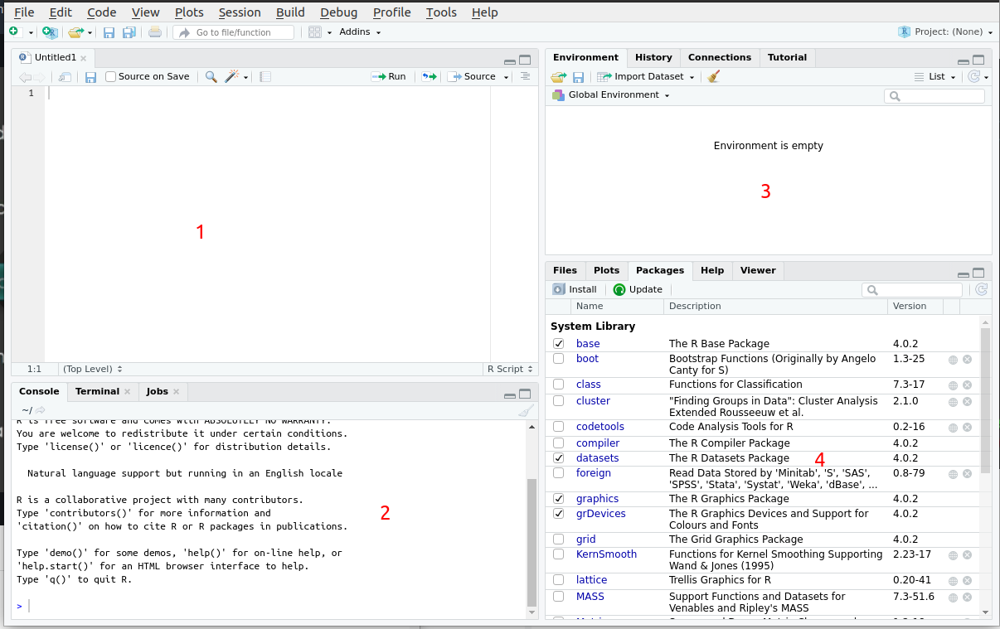
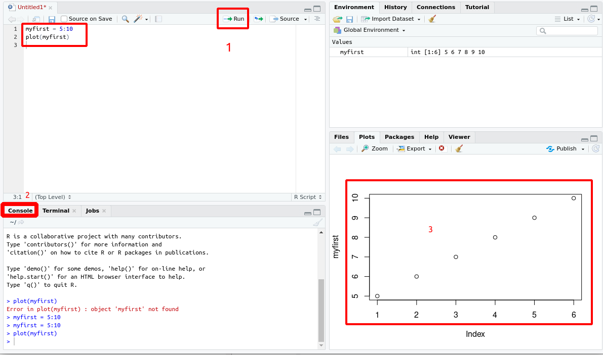
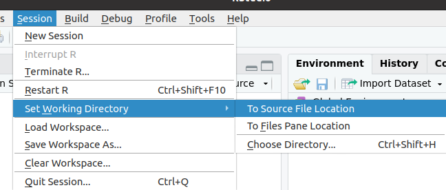

R studio Orientation
Alternatives of R studio

RStudio Orinebtation/UI

1) Script Section : Place to write your R script
2) Console : R console where the script Runs
3) Environment: Contains list of Objects created
4) Contains various options
1- Files : to export or import files
2- Plot : To see created graphs
3- Packages: To install/enable/disable packages
4- Help : R help and support
5- Viewer:
~~~~~~~~~~~~~~~~~~~~~~~~~~~~~~~~~
Running our first Script

myfirst = 5:10 // To initialize an array containing 6 values
plot(myfirst) // To plot the values in myfirst object on a graph
~~~~~~~~~~~~~~~~~~~~~~~~~~~~~~~~~
Tip :
• Press Ctrl+L to clear screen
• Press Ctrl+Shift++ to Zoom in
• Press Ctrl+- to Zoom out
• It's always good to set your working directory

• ?func : To search for a function working/ Help
• Before seaching in help make sure the parent package is activated.
• R case sensitive